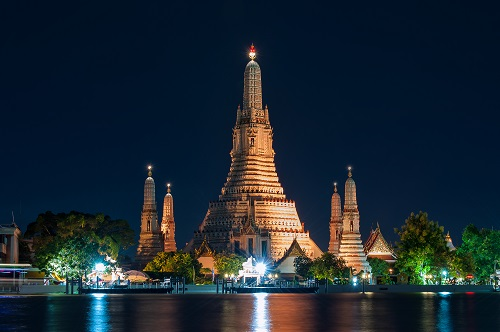
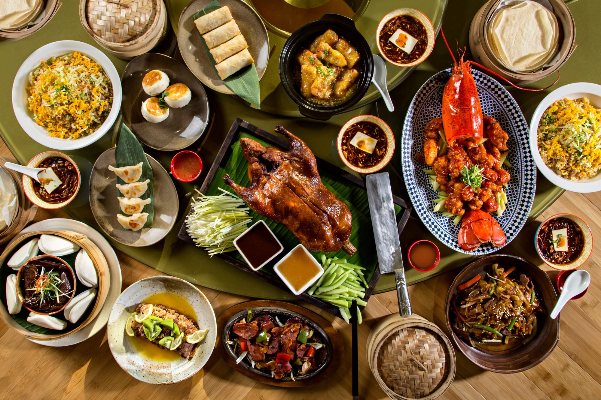
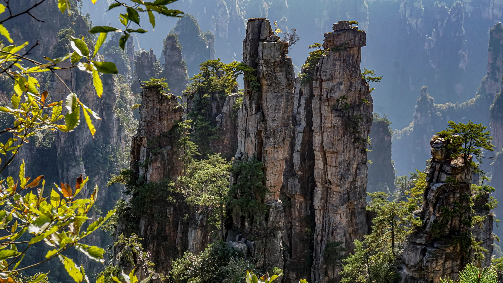
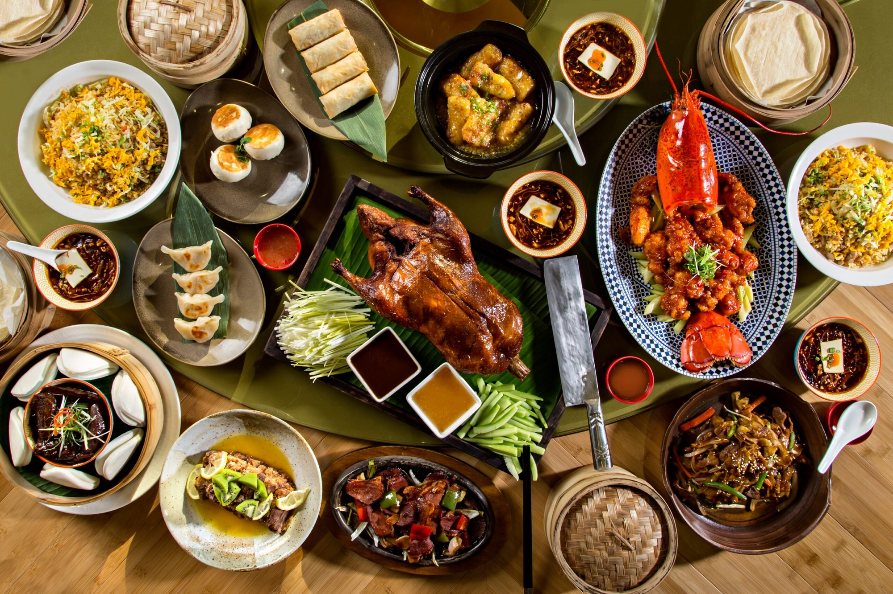
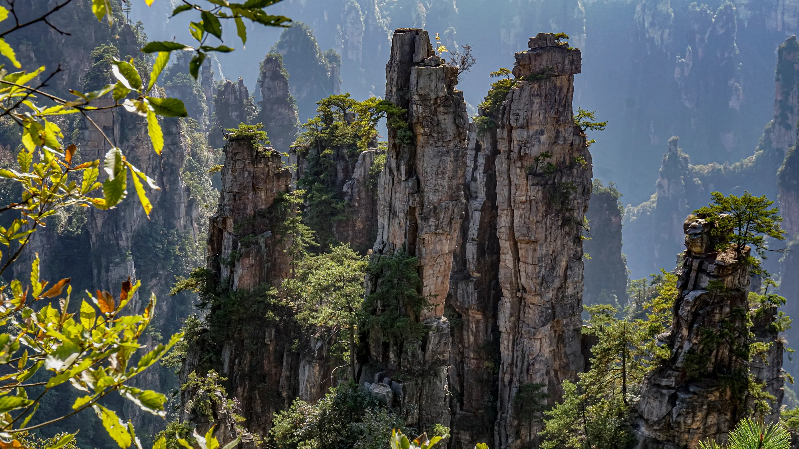

Land of smiles: Thailand is often referred to as the "Land of Smiles" due to the friendly and welcoming nature of its people. Thai people are known for their warm hospitality and cheerful demeanor. Buddhism: Buddhism is the predominant religion in Thailand, and it plays a significant role in the country's culture and daily life. Temples, or "wats," are scattered throughout the country, and the ornate Buddhist architecture is a sight to behold.

Beautiful beaches and islands: Thailand is renowned for its picturesque beaches and islands. Destinations like Phuket, Krabi, Koh Phi Phi, and Koh Samui offer stunning white sand beaches, crystal-clear waters, and opportunities for activities such as snorkeling and diving. Songkran festival: Songkran is the traditional Thai New Year festival celebrated in mid-April. It is known for its water fights and splashing water on others as a symbol of washing away bad luck and starting the new year fresh.
Thai cuisine: Thai cuisine is renowned worldwide for its bold flavors and aromatic dishes. From spicy curries like green curry and pad Thai to refreshing dishes like som tam (papaya salad), Thai food offers a diverse and vibrant culinary experience. Floating markets: Thailand is famous for its floating markets, where vendors sell fruits, vegetables, and local delicacies from boats along canals. The most well-known floating market is Damnoen Saduak, located near Bangkok.
Temples and palaces: Thailand is home to numerous stunning temples and palaces. The Grand Palace in Bangkok, with its intricate architectural details, and Wat Arun, the Temple of Dawn, are must-visit attractions that showcase Thailand's rich history and craftsmanship.
| Soul - South Korea | Hi: 81° Lo:62° | Humidity: 51%
Beautiful beaches and islands: Thailand is renowned for its picturesque beaches and islands. Destinations like Phuket, Krabi, Koh Phi Phi, and Koh Samui offer stunning white sand beaches, crystal-clear waters, and opportunities for activities such as snorkeling and diving. Beautiful beaches and islands: Thailand is renowned for its picturesque beaches and islands. Destinations like Phuket, Krabi, Koh Phi Phi, and Koh Samui offer stunning white sand beaches, crystal-clear waters, and opportunities for activities such as snorkeling and diving. Thai cuisine: Thai cuisine is renowned worldwide for its bold flavors and aromatic dishes. From spicy curries like green curry and pad Thai to refreshing dishes like som tam (papaya salad), Thai food offers a diverse and vibrant culinary experience. Floating markets: Thailand is famous for its floating markets, where vendors sell fruits, vegetables, and local delicacies from boats along canals. The most well-known floating market is Damnoen Saduak, located near Bangkok. Temples and palaces: Thailand is home to numerous stunning temples and palaces. The Grand Palace in Bangkok, with its intricate architectural details, and Wat Arun, the Temple of Dawn, are must-visit attractions that showcase Thailand's rich history and craftsmanship.
 | Soul - South Korea | Hi: 81° Lo:62° | Humidity: 51%
| Soul - South Korea | Hi: 81° Lo:62° | Humidity: 51%
Beautiful beaches and islands: Thailand is renowned for its picturesque beaches and islands. Destinations like Phuket, Krabi, Koh Phi Phi, and Koh Samui offer stunning white sand beaches, crystal-clear waters, and opportunities for activities such as snorkeling and diving. Beautiful beaches and islands: Thailand is renowned for its picturesque beaches and islands. Destinations like Phuket, Krabi, Koh Phi Phi, and Koh Samui offer stunning white sand beaches, crystal-clear waters, and opportunities for activities such as snorkeling and diving. Thai cuisine: Thai cuisine is renowned worldwide for its bold flavors and aromatic dishes. From spicy curries like green curry and pad Thai to refreshing dishes like som tam (papaya salad), Thai food offers a diverse and vibrant culinary experience. Floating markets: Thailand is famous for its floating markets, where vendors sell fruits, vegetables, and local delicacies from boats along canals. The most well-known floating market is Damnoen Saduak, located near Bangkok. Temples and palaces: Thailand is home to numerous stunning temples and palaces. The Grand Palace in Bangkok, with its intricate architectural details, and Wat Arun, the Temple of Dawn, are must-visit attractions that showcase Thailand's rich history and craftsmanship. Elephant conservation: Thailand is home to several elephant sanctuaries and conservation projects. Visitors have the chance to interact with these majestic creatures in an ethical and responsible manner, promoting their well-being and preservation. Muay Thai: Muay Thai, also known as Thai boxing, is a traditional martial art that originated in Thailand. It is a highly popular sport in the country and has gained international recognition for its rigorous training and fierce fighting techniques. Longest-reigning monarch: Thailand's current king, King Maha Vajiralongkorn, holds the title of the longest-reigning monarch in Thai history. He succeeded his father, King Bhumibol Adulyadej, who reigned for 70 years.


 


